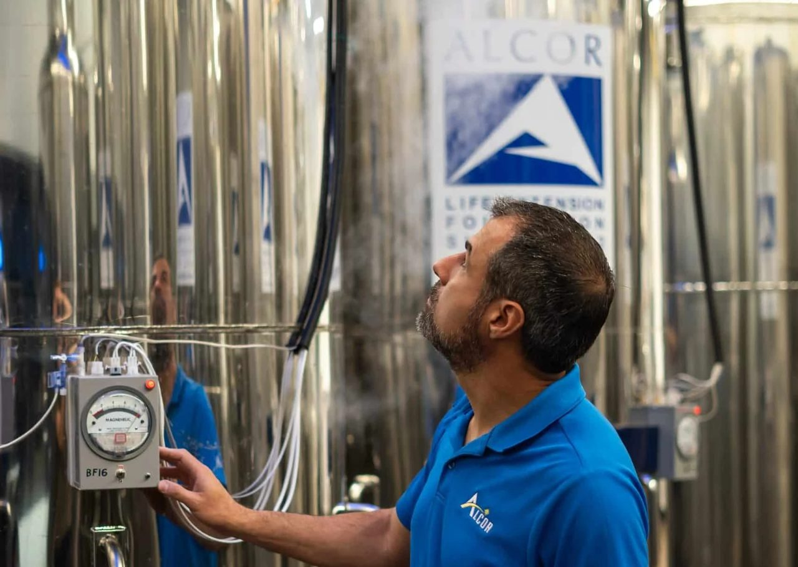

Looking into cryonics companies

From my archive, written 29 April 2023. These are my impressions at the time.
I took a look at some cryonics companies, just out of interest. I looked mainly at two: the Cryonics Institute and the Alcor Life Extension Foundation. Both are in America.
The Cryonics Institute is a non-profit, founded in 1976 by Robert Ettinger, who wrote The Prospect of Immortality and is known as the founding father of cryonics. He was born in 1918 and has been at the facility since his “death” in 2011. Their website says they hold the oldest cryonics patient, Dr James Bedford, who was frozen in 1967. He was born in 1893, so if he’s ever revived he’d be the oldest person on earth at 130. But plenty of sources say Bedford is actually at Alcor, so I’m not sure if that’s an error or what’s going on. Either way, the Cryonics Institute claims to be the only cryonics organisation with no debt, stockholders or landlords. Being a non-profit makes them cheaper, and who knows if they can hold out, but they have for this long already. Right now they have over 100 human patients and 170 animals.
One thing I fucking love is that they offer storage: a box about the size of a small shoebox for personal possessions, for $1,000. Nothing valuable, flammable or alive, but I think it’s an essential part of it. If it were me, I’d put in a small book about myself and my life in case my memory had significantly diminished, ideally on something that lasts longer than paper. I’d add a drive of 10 terabytes or more with every photo and video of my life, these diaries saved in maybe 10 different formats in case some don’t work in the future, and some printed photos of my family. That’s all I’d care about. Sentimental things are all that would matter.
Alcor was founded in 1972 by Fred and Linda Chamberlain (Fred was preserved in 2012). They have 205 patients and also take pets. They’re in Scottsdale, Arizona, and they explain at length why: a low risk of natural disasters, access to airports, good weather so transport isn’t disrupted, and a low crime rate. They describe death as a process, not an on-and-off switch. What they’re doing is slowing that process down, so their patients aren’t really dead or alive, but in the process of dying.
The best part of their website is the Alcor archive. It has so much on even the littlest things: religious views on cryonics, ethics, the history of cryonics, long-term financial stability, how to prepare to be frozen, and a timeline of every non-confidential patient with case summaries. There’s even a section on failures: why early companies went bankrupt, what happened to their patients, and how many relied on family members to keep paying storage fees, which didn’t work long term.
They’re honest. They admit that right now revival is impossible, and that no creature has ever been revived from below freezing apart from embryos. But the research continues. Sometimes it takes decades before even the basics are understood. They feel transparent.
They have a registered charity in the UK, and I hope there’s a facility here by the time I’m old. If not, I’ll need a fucking lot of money, because this shit ain’t cheap. It isn’t one payment but a membership and insurance you pay into over your life. For now I’d pick Alcor out of the two. It’s something I could talk about all day.